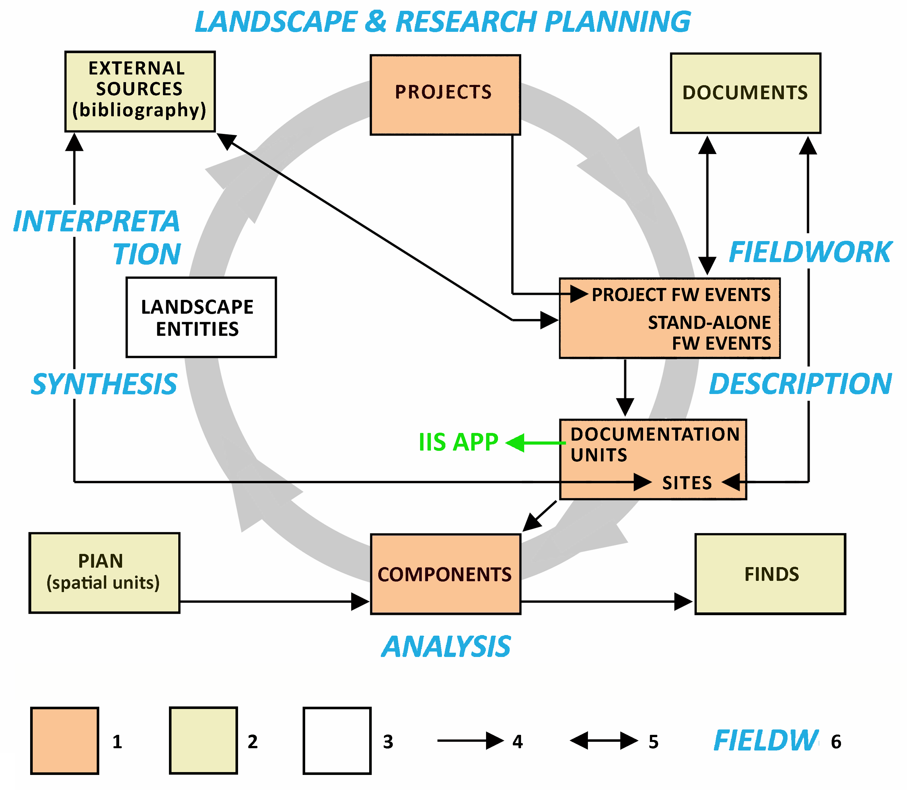
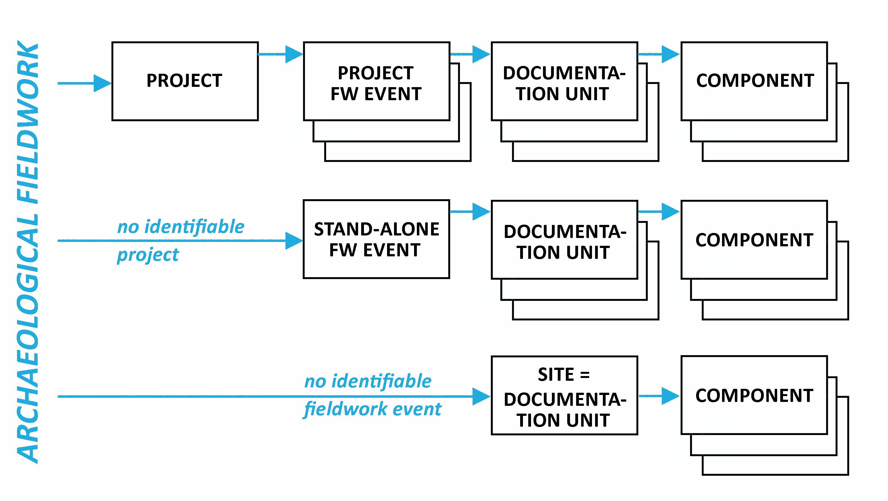

2 Základní pojmy
Řídící jednotkou evidence terénních aktivit v ČR je (v návaznosti na Archeologickou databázi Čech) „archeologická akce“, tedy jeden terénní výzkum. Tento pojem byl v rámci AMČR integrován do dynamického modelu archeologického výzkumu jakožto způsobu tvorby odborných poznatků. V tomto modelu prochází terénní archeologický výzkum postupně několika fázemi, z nichž v každé se pracuje se specifickými pojmy a kategoriemi. Těmito fázemi jsou formulace odborných cílů a územní plánování; vlastní terénní práce; funkční a chronologická analýza prozkoumaného archeologického kontextu a (iv) syntéza a interpretace získaných dat. Poté, co poznatky dospějí do fáze syntézy, mohou být kladeny nové výzkumné otázky a dochází k další iteraci poznávacího cyklu.
Datový model AMČR je nastaven tak, aby dovedl co nejvěrněji postihnout dynamický tok informací ve zmíněných fázích. Fázím poznávacího procesu odpovídají následující jednotky archeologické evidence: (i) projekty (plánování), (ii) akce a lokality (terénní práce); (iii) komponenty (funkční a chronologická analýza) a (iv) krajinné entity (syntéza).
Kromě nich existují v AMČR ještě další čtyři důležité skupiny dat, které využívá pro bližší specifikaci podoby a obsahu předchozích kategorií. Jde především o repozitář a soubor metadat terénní dokumentace v repozitářích Archeologických ústavů AV ČR, tzv. (v) dokumenty. Dále jde o (vi) nálezy z terénních výzkumů, kterými jsou jednotlivé komponenty blíže charakterizovány. Pomocným, leč také důležitou informaci nesoucím údajem jsou (vii) prostorové jednotky (PIAN) a (viii) bibliografické záznamy chápané jako externí zdroje.

2.1 Projekty
Evidenční jednotky terénní činnosti badatelského nebo záchranného rázu evidované již ve fázi přípravy nazýváme projekty. Pro vymezení projektu je rozhodující podnět k výzkumu a provádějící subjekt (oprávněná organizace), lokalizace a příp. projektová dokumentace. Na projekt zpravidla navazuje jedna či (méně často) více terénních akcí.
2.2 Akce
Archeologická akce je jakákoli logická, tj. prostorově a dobou provedení ucelená a konkrétní osobou/organizací provedená část terénní archeologické činnosti, sloužící jako jednotka evidence. V zásadě může jít o terénní činnost libovolného časového a prostorového rozsahu; u velkých terénních výzkumů (např. výzkumů na liniových stavbách) je ovšem doporučováno evidovat terénní práce jako několik akcí, a to podle území katastrů. Důvodem je přehlednost dat a jejich snazší vyhledávání podle jména katastru, což je jedno z nejčastějších vyhledávacích kritérií.
Akce je zpravidla pokračováním archeologického projektu; v takovém případě hovoříme o projektové akci. V rámci projektu může proběhnout i několik (projektových) akcí, které se liší prostorovým vymezením, ale teoreticky třeba i sezónou výzkumu.
Existují i případy akcí, které nesouvisejí s předem evidovaným projektem. Stává se to zejména při retrospektivním zpracování starších archeologických výzkumů, u neplánovaných výzkumů (např. při náhodných nálezech) nebo při aplikaci některých nedestruktivních terénních metod. U těchto typů akcí není jejich předběžná a/nebo zpětná evidence jako projektů možná nebo účelná. Dané akce proto evidujeme samostatně a hovoříme o samostatných akcích.
2.3 Lokality
Specifickým případem terénního výzkumu je vizuální povrchový a letecký průzkum, při kterém bývají evidovány archeologické útvary, ale bez získání movitých nálezů. Při tomto typu terénní práce jsou zpravidla evidovány logické celky odpovídající určitému krajinnému prvku s potenciálním archeologickým významem (např. jeskyně, výšinná poloha) a/nebo specifickému, na povrchu viditelnému archeologickému projevu (příznaky na letecké fotografii, prostor vymezený valy apod.). Takovým celkům (dokumentačním jednotkám) říkáme lokality.
Smyslem zavedení kategorie lokality je (i) zařadit do evidence prostorové celky známé z různých druhů vizuálního průzkumu, ale dosud řádně nezkoumané a mezi akcemi tudíž nepodchycené; (ii) neztratit informaci o těchto jednotkách jako větších celcích, jelikož mezi akcemi se většinou objevují jen jejich dílčí prozkoumané části, a zároveň (iii) vyčistit databázi akcí od zbytečných, redundantních záznamů typu opakovaných „návštěv lokality“, tedy případů, kdy se větší počet akcí váže ke stejné lokalitě, ale v zásadě nepřináší nové informace.
2.4 Dokumentační jednotky
Archeologické terénní akce členíme na prostorové celky, tzv. dokumentační jednotky. Za dokumentační jednotku lze považovat celý prostor akce, jeho část odpovídající určité skupině nálezů, příp. jeho část definovanou průběhem výzkumu (např. konkrétní sondu). Akce mohou mít jednu nebo více dokumentačních jednotek různých typů, lokalita má právě jednu.

2.5 Komponenty
Komponenta akce je prostorovým, chronologickým a funkčním celkem nálezů z jedné dokumentační jednotky akce, komponenta lokality je analogickou částí lokality, avšak definovaná jen typologicky na základě viditelných povrchových znaků nebo informace z jiných zdrojů. Jako komponentu dokumentu chápeme chronologický a funkční celek archeologické akce doložený výpovědí některého dokumentu.
Komponenty jsou určeny přiřazením k určitému areálu aktivity (specifické funkční části sídelního areálu, cf. Neustupný 1986) a období (chronologicko-kulturnímu zařazení). Každé komponentě se dále přiřazuje i výčet aktivit, tedy druhů činností, které jsou v rámci komponenty přímo doloženy: např. v areálu „sídliště“ může být kromě aktivity „sídlištní“ (přiřazené automaticky) zachycena i aktivita „pohřební“ (např. pohřeb v sídlištní jámě), „výrobní“ (keramická pec), „deponování“ (depot keramických nádob) a „komunikace“ (cesta vedoucí sídlištěm).
Komponenty jsou arbitrárně vymezenými jednotkami; rozhodujícím hlediskem při jejich vymezení je přehlednost a srozumitelnost záznamu o obsahu akce. Máme-li např. v rámci menší archeologické akce sídlištní nálezy dvou archeologických kultur, můžeme danou situaci popsat jako jednu dokumentační jednotku se dvěma komponentami. Je-li plocha výzkumu větší a nálezy jednotlivých kultur nejsou rozprostřeny po jejím celém rozsahu, je vhodnější vymezit v rámci akce jednu dokumentační jednotku typu „celek“ a doplnit ji dvěma komponentami menšího rozsahu (obě mohou společnou dokumentační jednotku, ale též rozdílnou). Pokud je na ploše výzkumu několik sond a rozhodneme-li se každou sondu chápat jako samostatnou dokumentační jednotku, bude počet komponent odpovídat počtu sond násobenému počtem archeologických období v nich zastoupených.
(viz také Negativní zjištění)
2.6 Nálezy
V AMČR nepočítáme s podrobným a vyčerpávajícím popisem archeologických nálezů patřících jednotlivým komponentám, nálezy chápeme jen jako specifické vlastnosti komponent, které nám pomáhají charakterizovat pramenné východisko, podle něhož byla komponenta rozpoznána. Bližší popis nálezu je totiž v mnoha případech nezbytný pro pochopení, o jakou akci/komponentu šlo. Např. u komponenty „depot“ je nezbytné uvést, o jaký materiál a druh předmětů jde a někdy může být užitečné specifikovat dokonce čísla muzejní evidence. U velkých komponent je tomu jinak: nálezy stačí evidovat souhrnně a výběrově a uvést při tom jen ty položky, které komponentu nejlépe charakterizují; např. u rozsáhlého pravěkého sídliště uvedeme třeba jen údaje typu „desítky domů“, „stovky zahloubených jam“, příp. „pohřby v sídlištních jamách“ a další charakteristické příklady.
V rámci AMČR tedy nevzniká pro nálezy (na rozdíl od jiných datových tříd) autoritní seznam položek s jednoznačnými identifikátory; nemovité nálezy mohou být dokonce evidovány v rámci více akcí opakovaně (týž příkop odkrytý opakovaně, základy téže kostelní stavby aj.).
2.7 PIAN
Prostorové vymezení archeologických výzkumů je v AMČR zajišťováno povinným vztahem dokumentačních jednotek k některé z jednotek prostorové identifikace. Tyto jednotky nazýváme PIAN (Prostorová identifikace archeologických nálezů). Pojetí prostorových vymezení archeologických akcí jako samostatných databázových objektů (tedy nikoliv jako vlastností záznamů o akcích) je jedním z nových prvků, které AMČR přinesla. Každá jednotka PIAN může mít vazby k většímu počtu akcí nebo lokalit a v případě akcí to platí i naopak.
2.8 Dokumenty
Dokumentem rozumíme v AMČR prvek dokumentace terénního archeologického výzkumu uložený v archivech ARÚP a ARÚB. Obdobné informační zdroje v jiných institucích chápeme jako externí zdroje; na rozdíl od dokumentů totiž nemůžeme zajistit jejich podrobný metadatový popis ani fulltextovou verzi. Obsah dokumentů lze popsat prostřednictvím komponent dokumentu (analogicky ke komponentám akcí) a nálezů dokumentu. Takový popis má účel zejména u fotografií a plánů, jejichž obsah je pochopitelně vždy užší než obsah celé terénní akce. Jde-li např. o fotografii hrobu starší bronzové, je chronologický a věcný údaj zachycen jako komponenta a nález (dokumentu), podle nichž lze fotografii vyhledat, aniž by bylo nutné probírat stovky jiných fotografií z daného výzkumu. Fyzickým ekvivalentem dokumentu je soubor, příp. několik souborů uložených v repozitářích digitálního archivu. Soubor má svůj vlastní metadatový popis týkající jeho fyzických vlastností, data vzniku, migrace apod.
2.9 Externí zdroje (bibliografie)
Bibliografický segment AMČR slouží k napojení záznamů o akcích na zdrojové informace v publikacích, odborných zprávách a šedé literatuře. Jako externí zdroje jsou chápány publikace, novinové články, nepublikované odborné zprávy a jiné informační zdroje, které nejsou uloženy v archivech ARÚP a ARÚB a nejsou tudíž zahrnuty mezi dokumenty.
2.10 MADB
Extenze MADB vychází z dlouhodobého badatelsko-evidenčního záměru Oddělení archeologie středověku ARÚ Praha - Mapa archeologických dokumentačních bodů na území Pražské památkové rezervace (MADB; PPR) - jenž byl po několik desetiletí spjat se jménem Ladislava Hrdličky (1937–2011). Na jeho odkaz navázal v letech 2013–2017 projekt NAKI (DF13P01OVV014) Integrovaný informační systém archeologických pramenů Prahy, v jehož rámci byl vytvořen obecný nástroj sběru záznamů archeologických dokumentačních bodů (ADB) a výškových bodů (VB) na komplexních lokalitách urbánního charakteru, tedy zejména v historických jádrech měst.
Mapa archeologických dokumentačních bodů (MADB)
Autoritní databáze zásahů do archeologických terénů prováděných oprávněnými organizacemi na území Pražské památkové rezervace (UNESCO). Databáze vychází ze souboru informací shromážděných v 90. letech L. Hrdličkou. Řídícím prvkem databáze je „archeologický dokumentační bod“, čili jednotlivá sonda archeologického výzkumu, geologického průzkumu apod. Databáze je specializovaným rozšířením AMČR a je zpřístupněna jako součást webového rozhraní http://www.praha-archeologicka.cz/.
Archeologické dokumentační body (ADB)
Datová třída Archeologický dokumentační bod (ADB) zahrnuje fakultativní rozšiřující popis dokumentační jednotky typu Sonda. Ten zahrnuje bližší identifikaci terénního zásahu (adresními údaji, parcelním číslem), základní charakteristiku terénního zásahu (Typ sondy, Podnět, Počet stratigrafických jednotek) a údaje provazující záznam s primární dokumentací (autor a rok popisu, resp. revize, uživatelské označení sondy); součástí popisu ADB je též textové pole poznámky.
Výškové body (VB)
K záznamu ADB je v relaci 1:N vázána datová třída Výškový bod. Ta postihuje výškové úrovně povrchu a dna sondy, (sníženého) podloží a základních antropogenních horizontů (pravěk, středověk, novověk, industriál) a slouží tak k popisu vývoje historického nadloží v místě archeologického výzkumu.
Další informace též ZDE
2.11 Další pojmy
Archeologická databáze Čech (ADČ)
Původní databáze archeologických výzkumů a nálezů. Vznikla v ARÚP v r. 1990 a byla průběžně doplňována jak rešerší literatury, archivů a muzejních sbírek, tak informacemi o výsledcích nových terénních výzkumů, které oprávněné organizace předávají do centrálního archivu. K r. 2012 ADČ zahrnovala kolem 94 tis. záznamů, které byly v rámci projektu AMČR obsahově a prostorově revidovány. V r. 2016 probíhá její transformace do AMČR.
Archeologický fond
Termínem „archeologický fond“ se rozumí souhrn dokumentace archeologického výzkumu a veškeré movité nálezy, které byly během výzkumu získány a vyhodnoceny jako hodné uchování v příslušných paměťových institucích. Z archeologických pramenů zůstávají mimo takto vymezený pojem pouze archeologická naleziště jako taková, resp. nemovité nálezy a situace uchovávané in situ. Pojem „archeologický fond” postihuje „multimediální“ charakter primární archeologické informace (artefaktuální, digitální, různé typy analogových dokumentů), které z důvodu rozdílných konzervačních nároků a platných právních úprav bývají v ČR zpravidla ukládány i evidovány odděleně. Proto je nezbytné při pořádání nálezového fondu dbát na zachování vnitřních souvislostí všech jeho komponent (Perrin et al. 2014, 18-19).
Badatelská výzkum
Archeologická akce prováděná z čistě badatelských pohnutek na místě, jehož archeologický obsah není bezprostředně ohrožen. Provádění badatelských výzkumů podléhá schvalování ze strany Archeologických ústavů AV ČR, v dikci připravovaného Památkového zákona Archeologické rady.
Digitální archiv AMČR
Repozitář skenovaných dokumentů a soubor primárně digitálních dat v archivu terénní dokumentace ARÚP doplněný podrobným popisem metadaty. Práce na DA byly zahájeny po povodni r. 2002, v r. 2010 byla digitalizace dokončena. Webová aplikace DA je funkční od r. 2005 (http://www.ARÚP.cas.cz/?cat=327), v r. 2016 bude nahrazena aplikací Digitální archiv AMČR.
Digitální archiv a evidence archeologických výzkumů Moravy a Slezska (DAEAV)
Databáze výsledků archeologických výzkumů a na ně navázaných digitálních dokumentů pro Moravu a Slezsko. Vznikala od r. 2009; od r. 2016 probíhá její postupná integrace do AMČR.
Internetová databáze archeologických výzkumů (IDAV)
Registr plánovaných terénních zásahů s možností provedení archeologického výzkumu. V r. 2009 zaveden v ARÚP, v r. 2011 i na Moravě a ve Slezsku. IDAV sehrává klíčovou roli v evidenci archeologických terénních aktivit na území Česka (http://idav.cz/). V r. 2017 bude nahrazen AMČR, přičemž záznamy tohoto typu budou evidovány jako „projekty“.
Nálezová zpráva
Nálezovou zprávou rozumíme dokument souhrnně popisující provedenou archeologickou akci, s pevně určenými náležitostmi. Nálezová zpráva má za úkol plně postihnout podstatu výzkumu, srozumitelnou formou zpřístupnit terénní dokumentaci a nastínit základní interpretaci. Pokyny a doporučené postupy pro vypracování nálezové zprávy jsou dostupné na adrese http://www.ARÚP.cas.cz/?cat=601.
Negativní zjištění
Negativním zjištěním (též prázdnou komponentou) rozumíme poznatek, že v prostoru určité archeologické akce či dokumentační jednotky nebyly při aplikaci standardních archeologických metod zjištěny žádné archeologické nálezy. Popisu takových akcí je systematicky věnována pozornost od počátku 90. let, a to s přesvědčením, že pro řešení sídelně archeologických otázek jde o informace velmi důležité. Pro jednoduchost postupu se v AMČR údaj o negativním pozorování připojuje k dokumentační jednotce, ke které pak není nutno připojit žádnou jinou komponentu. Připojit hodnotu „negativního zjištění“ dokumentační jednotce „celku“ akce a následně její plochu překrýt lokálními dokumentačními jednotkami s určitými komponentami je nejjednodušším způsobem jak popsat situaci, kdy velká plocha či dlouhá linie je převážně bez nálezů, ale na několika místech je negativní pozorování přerušeno výskytem nálezů.
Oprávněná archeologická organizace
Pojem oprávněná archeologická organizace (také oprávněná organizace či OAO) označuje instituci oprávněné k provádění archeologických výzkumů podle zákona o státní památkové péči (20/1987 Sb.). Nově připravovaný Památkový zákon nahrazuje tento pojem spojením archeologická osoba.
Projektová dokumentace
Projektová dokumentace doplňuje popis projektu o další údaje nad rámec metadatového popisu. Zejména jde o popis odborných záměrů výzkumu, plánované vymezení apod. Projektová dokumentace je v rámci nového Památkového zákona chápána jako důležitá součást dokumentace výzkumu a stane se její povinnou součástí.
Registrovaný uživatel
Za registrovaného uživatele je považován každý uživatel aplikace s aktivním uživatelským účtem, tedy na úrovni všech oprávnění, kromě oprávnění Anonym.
Správce systému
Správcem systému se rozumí uživatelé s oprávněním Archivář či Administrátor. Zpravidla jde o zaměstnance archivů ARÚP a ARÚB. Správce lze kontaktovat přes emailovou adresu info@amapa.cz nebo na adresách uvedených v Kontaktech.
Terénní zásah
Libovolný zásah do terénu, který dává podnět k provedení archeologického výzkumu podle zákona o státní památkové péči (20/1987 Sb.).
Výzkumné infrastruktury
Výzkumnou infrastrukturou se rozumí zařízení, zdroje a související služby, které vědecká obec využívá k provádění špičkového výzkumu ve všech oborech, zahrnující základní vědecké vybavení a výzkumný materiál; zdroje založené na znalostech, například sbírky, archivy a strukturované vědecké informace; infrastruktury informačních a komunikačních technologií, například sítě GRID, počítačové a programové vybavení, komunikační prostředky, jakož i veškeré další prvky jedinečné povahy nezbytné k dosažení špičkové úrovně. Tyto infrastruktury se mohou nacházet na jednom místě nebo mohou být „rozmístěné“ v rámci sítě (organizovaná síť zdrojů; http://www.msmt.cz/vyzkum-a-vyvoj/definice-infrastruktury).
Záchranná akce (záchranný projekt)
Archeologický výzkum realizovaný v souvislosti s plánovaným či probíhajícím terénním zásahem (viz výše).
Zpráva o archeologické akci (ZAA)
Zpráva o archeologické akci (ZAA) označuje formulář pro metadatový popis archeologického výzkumu, používaný při sběru dat pro Archeologickou databázi Čech (viz výše). V rámci AMČR je jako ekvivalent ZAA označována tzv. Karta akce, resp. Karta samostatné akce.